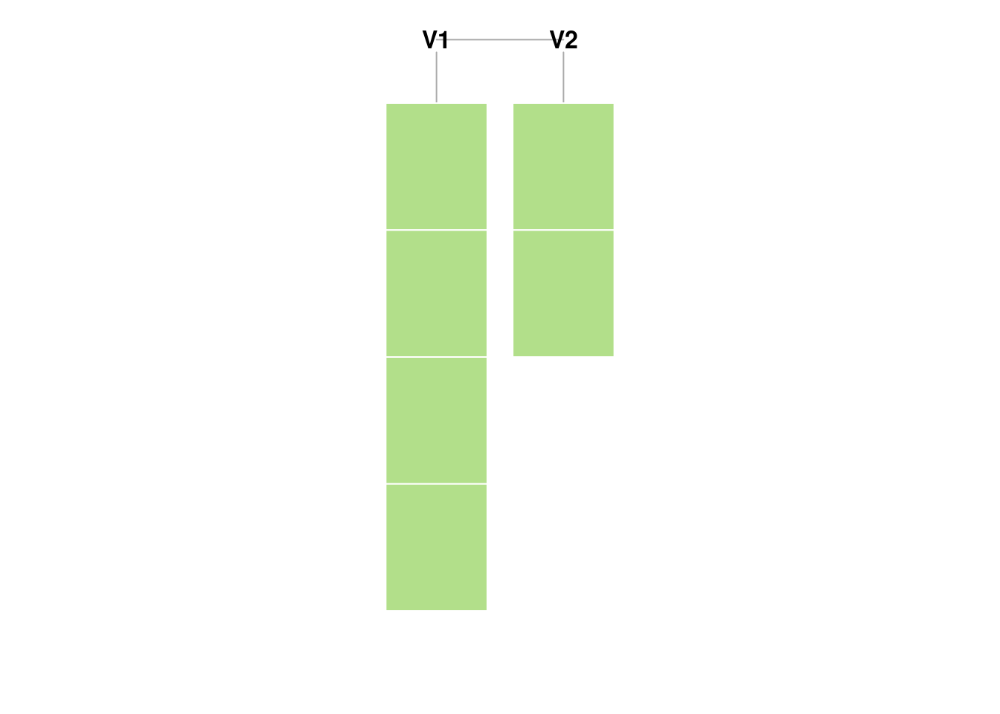

6 Lists
In this chapter, we’re going to learn about lists. Lists can be a bit confusing the first time you begin to use them. Heaven knows it took me ages to get comfortable with them. However, they’re a very powerful way to structure data and, once mastered, will give you all kinds of control over pretty much anything the world can throw at you. If vectors are R’s atoms, lists are molecules.
By the end of this chapter, you will know the following:
- What is a list and how are they created?
- What is the difference between a list and vector?
- When and how do I use
lapply?
6.1 Lists Overview
A list is a bit like a vector in that it is a container for many elements of data. However, unlike a vector, the elements of a list may have different data types. In addition, lists may store data recursively. This means that a list may contain list, which contains another list and so on. Partially for this reason, access and assignment will use two new operators: [[]] and $. Confusing? Sorta. But don’t worry, we’ll walk through why and how you’ll work with lists.
The table below outlines some of the similarities and differences between vectors and lists.
6.2 List construction
The list function will create a list. Have a look at the code below and try it out yourself.
x <- list(c("This", "is", "a", "list")
, c(pi, exp(1)))
typeof(x)
#> [1] "list"
summary(x)
#> Length Class Mode
#> [1,] 4 -none- character
#> [2,] 2 -none- numeric
str(x)
#> List of 2
#> $ : chr [1:4] "This" "is" "a" "list"
#> $ : num [1:2] 3.14 2.72Visually, here’s what that looks like:

We said earlier that the concept of dimension doesn’t really apply to lists. We mean it and so does R. If you ask for the dimension of a list, you’ll get NULL. I’m not mathy enough to have anything intelligent to say abouut the dimensionality of a single construct composed of elements which each have their own dimension.
Note that you can ask for the length. This will return the number of top-most elements in the list.
dim(x)
#> NULL
length(x)
#> [1] 2Note that, weirdly - and a little confusingly - you can create a list by using the vector function.
myList <- vector(mode = "list", length = 5)As we said in the Vectors chapter, you’ll likely only do this to improve memory management performance. Don’t worry about that at this stage. However, if you’d like to play with access and assignment, vector may be useful.
6.2.1 Recursive storage
Lists can contain other lists as elements. And these lists may contain other lists and so on. It sounds complex, but it’s no stranger than your file system, e.g. a folder contains a folder, which contains another folder.
trey <- list("Trey Anastasio", "guitar", 1964)
page <- list("Page McConnell", "piano", 1963)
jon <- list("Jon Fishman", "drums", 1965)
mike <- list("Mike Gordon", "bass", 1965)
phish_members <- list(trey, page, jon, mike)
phish_albums <- c("Junta", "Rift", "Hoist")
phish <- list(phish_members, phish_albums)This will be familiar to anyone who uses XML, JSON or YAML.
6.2.2 List metadata
Again, metadata will typically be names. However, these become very important for lists as names are handled with the special $ operator. We’ll talk about $ shortly. We can also assign a name as the list is being constructed.
names(phish) <- c("Members", "Albums")
phish <- list(Members = phish_members, Albums = phish_albums)6.3 Access and assignment
Because list elements can be arbitrarily complex, access and assignment get new operators. We’ll use the [[ ]] operator when we want to access a single element of a list by name or position. $ will work for named arguments only.
phish[["Albums"]]
#> [1] "Junta" "Rift" "Hoist"
phish[[2]]
#> [1] "Junta" "Rift" "Hoist"
phish$Albums
#> [1] "Junta" "Rift" "Hoist"6.3.1 [ vs. [[
[ ] may also be used to access elements of a list. When first learning R, I found the distinction betwee [ ] and [[ ]] particularly vexing. After using lists for a while, I finally decided that this was the best way to distinguish between them:
[is used to set and return an element of the same type as the containing object.[[is used to set and return an element of the same type as the contained object.
This is why [ ] will return a list when applied to a list. This is also why it may be used to return more than one element of list. Have a look at the code snippet below:
typeof(phish["Albums"])
#> [1] "list"
typeof(phish[["Albums"]])
#> [1] "character"Don’t worry if this doesn’t make sense yet. It’s difficult for most R programmers.
6.3.2 Assignment
As with vectors, assignment may be thought of as access in reverse.
phish[["Albums"]] <- c("Lawn Boy", "A Picture of Nectar")6.4 Summary functions
Because lists are arbitrary, we can’t expect functions like sum or mean to work. Instead, we use functions like lapply to summarize particular list elements. lapply will apply the same function to each element of a list. In the example below, we’ll generate some statistics for three different vectors stored in a list.
myList <- list(firstVector = c(1:10)
, secondVector = c(89, 56, 84, 298, 56)
, thirdVector = c(7,3,5,6,2,4,2))
lapply(myList, mean)
#> $firstVector
#> [1] 5.5
#>
#> $secondVector
#> [1] 116.6
#>
#> $thirdVector
#> [1] 4.142857
lapply(myList, median)
#> $firstVector
#> [1] 5.5
#>
#> $secondVector
#> [1] 84
#>
#> $thirdVector
#> [1] 4
lapply(myList, sum)
#> $firstVector
#> [1] 55
#>
#> $secondVector
#> [1] 583
#>
#> $thirdVector
#> [1] 29Why lapply? Two reasons:
- It’s expressive. A loop is a lot of code which does little to clarify intent.
lapplyindicates that we want to apply the same function to each element of a list and it does it in only one line of code. Think of a formula that exists as a column in a spreadsheet. - It’s easier to type at an interactive console. In its very early days,
Swas fully interactive. Typing aforloop at the console is a tedius and unnecessary task.
Note that we can also use lapply on structures like a vector.
6.5 Exercises
- Create a list with two elements. Have the first element be a vector with 100 numbers. Have the second element be a vector with 100 dates. Give your list the names: “Claim” and “AccidentDate”.
- What is the average value of a claim?
6.6 Answers
myList <- list()
myList$Claims <- rlnorm(100, log(10000))
myList$AccidentDate <- sample(seq.Date(as.Date('2000-01-01'), as.Date('2009-12-31'), length.out = 1000), 100)
mean(myList$Claims)
#> [1] 16349.04